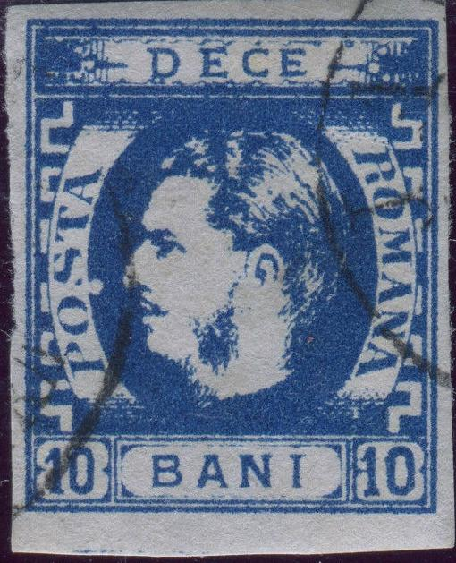
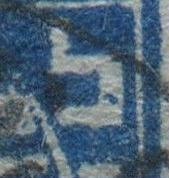
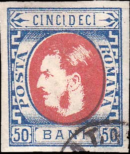

I presume these are genuine 5 bani stamps?
Return To Catalogue - Rumania 1869 issue (king with whiskers) - Rumania - Cancels on stamps of Rumania
Note: on my website many of the
pictures can not be seen! They are of course present in the
catalogue;
contact me if you want to purchase it.
Rumania 1869 issue (king with whiskers)
Types (see also http://www.romaniastamps.com/sc/molcar/carframe.htm):
There are four cliches of the all values, except for the 10 b where there are eight (4 for the blue and 4 for the indigo color, but those types appear to be very similar; at least I am not able to distinguish them....). Many of the distinguishing characteristics are microscopic and only visible with high magnification:
For the 5 bani: sorry, no images available. The differences between the 4 types appear to be very microscopic.
I presume these are genuine 5 bani stamps?

10 bani blue, type 1: bottom part of "S" of
"POSTA" missing.



10 bani, Type 3; this type has an extension at the upper right
hand side corner.

10 bani, type 4, there is a tiny dot in the upper right greek
ornament. Note that type 2 also has a dot in this ornament but
placed slightly higher and that dot is larger. In this type there
is also a break in the frameline above the lower right
"0".

15 bani, Type 1; small dot in the first "C" of
"CINCIS" and another small dot behind the "P"
of "PREDECE".

15 bani Type 2: curl at the left hand side of the "A"
of "POSTA" and break in the leg of "M" of
"ROMANA".

15 bani, Type 3; this type has an extension of the bottom of the
first "C" of "CINCIS" and a small dot in
between the "1" and "5" in the lower right
bottom.

15 bani, Type 4. There is a break in the horizontal bar of
"A" in "POSTA".

25 bani type 1; extension at the upper right hand side corner and
small break in second orange line above the 'AN' of 'BANI'

25 bani type 2, dot in the "O" of "POSTA" and
a scratch through the upper part of the first "C" of
"CINCI".

25 bani type 3; small white hole in the line around the left
"25" in the lower left corner (to the bottom left of
the "2"). Dot in most outer white frameline under
"I" of "BANI".

Type 4, the crossbar of the "A" of "POSTA" is
broken.


Type 1, blue dot in the white frameline next to the
"NA" of "ROMANA"

Probably type 2, the slanting line in the upper right corner
continues towards the outer frameline.
Type 3 has smudges in and around the left "0" of
"50".


{kind=link}